소방설비기사(기계분야) (2018-04-28 기출문제)
1과목: 소방원론
1. 액화석유가스(LPG)에 대한 성질로 틀린 것은?
- 주성분은 프로탄, 부탄이다.
- 천연고무를 잘 녹인다.
- 물에 녹지 않으나 유기용매에 용해된다.
- 공기보다 1.5배 가볍다.
(정답률: 73%)

2. 다음의 소화약제 중 오존 파괴 지수(ODP)가 가장 큰 것은?
- 할론 104
- 할론 1301
- 할론 1211
- 할론 2402
(정답률: 55%)
3. 건축물에 설치하는 방화구획의 설치기준 중 스프링클러설비를 설치한 11층 이상의 층은 바닥면적 몇 m2 이내마다 방화구획을 하여야 하는가? (단, 벽 및 반자의 실내에 접하는 부분의 마감은 불연재료가 아닌 경우이다.)
- 200
- 600
- 1000
- 3000
(정답률: 44%)
4. 삼림화재 시 소화효과를 증대시키기 위해 물에 첨가하는 증점제로서 적합한 것은?
- Ethylene Glycol
- Potassium Carbonate
- Ammonium Phosphate
- Sodium Carboxy Methyl Cellulose
(정답률: 58%)
5. 소화방법 중 제거소화에 해당되지 않는 것은?
- 산불이 발생하면 화재의 진행방향을 앞질러 벌목
- 방안에서 화재가 발생하면 이불이나 담요로 덮음
- 가스 화재 시 밸브를 잠궈 가스흐름을 차단
- 불타고 있는 장작더미 속에서 아직 타지 않은 것을 안전한 곳으로 운반
(정답률: 76%)
6. 포소화약제의 적응성이 있는 것은?
- 칼륨 화재
- 알킬리튬 화재
- 가솔린 화재
- 인화알루미늄 화재
(정답률: 64%)
7. 제2류 위험물에 해당하는 것은?
- 유황
- 질산칼륨
- 칼륨
- 톨루엔
(정답률: 67%)
8. 주수소화 시 가연물에 따라 발생하는 가연성 가스의 연결이 틀린 것은?
- 탄화칼슘 - 아세틸렌
- 탄화알루미늄 – 프로판
- 인화칼슘 – 포스핀
- 수소화리튬 - 수소
(정답률: 63%)
9. 물리적 폭발에 해당하는 것은?
- 분해 폭발
- 분진 폭발
- 증기운 폭발
- 수증기 폭발
(정답률: 59%)
10. 위험물안전관리법령상 지정된 동식물유류의 성질에 대한 설명으로 틀린 것은?
- 요오드가가 작을수록 자연발화의 위험성이 크다.
- 상온에서 모두 액체이다.
- 물에 불용성이지만 에테르 및 벤젠 등의 유기용매에는 잘 녹는다.
- 인화점은 1기압하에서 250℃ 미만이다.
(정답률: 63%)
11. 피난계획의 일반원칙 Fool Proof 원칙에 대한 설명으로 옳은 것은?
- 1가지가 고장이 나도 다른 수단을 이용하는 원칙
- 2방향의 피난동선을 항상 확보하는 원칙
- 피난수단을 이동식 시설로 하는 원칙
- 피난수단을 조작이 간편한 원시적 방법으로 하는 원칙
(정답률: 70%)
12. 인화점이 낮은 것부터 높은 순서로 옳게 나열된 것은?
- 에틸알코올 ＜ 이황화탄소 ＜ 아세톤
- 이황화탄소 ＜ 에틸알코올 ＜ 아세톤
- 에틸알코올 ＜ 아세톤 ＜ 이황화탄소
- 이황화탄소 ＜ 아세톤 ＜ 에틸알코올
(정답률: 53%)
13. 화재발생 시 발생하는 연기에 대한 설명으로 틀린 것은?
- 연기의 유동속도는 수평방향이 수직방향보다 빠르다.
- 동일한 가연물에 있어 환기지배형 화재가 연료지배형 화재에 비하여 연기발생량이 많다.
- 고온상태의 연기는 유동확산이 빨라 화재전파의 원인이 되기도 한다.
- 연기는 일반적으로 불완전 연소시에 발생한 고체, 액체, 기체 생성물의 집합체이다.
(정답률: 68%)
14. 물과 반응하여 가연성 기체를 발생하지 않는 것은?
- 칼륨
- 인화아연
- 산화칼슘
- 탄화알루미늄
(정답률: 50%)
15. 건축물의 화재발생 시 인간의 피난 특성으로 틀린 것은?
- 평상 시 사용하는 출입구나 통로를 사용하는 경향이 있다.
- 화재의 공포감으로 인하여 빛을 피해 어두운 곳으로 몸을 숨기는 경향이 있다.
- 화염, 연기에 대한 공포감으로 발화지점의 반대방향으로 이동하는 경향이 있다.
- 화재 시 최초로 행동을 개시한 사람을 따라 전체가 움직이는 경향이 있다.
(정답률: 75%)
16. 물체의 표면온도가 250℃에서 650℃로 상승하면 열 복사량은 약 몇 배 정도 상승하는 가?
- 2.5
- 5.7
- 7.5
- 9.7
(정답률: 57%)
17. 조연성 가스에 해당하는 것은?
- 일산화탄소
- 산소
- 수소
- 부탄
(정답률: 70%)
18. 자연발화 방지대책에 대한 설명 중 틀린 것은?
- 저장실의 온도를 낮게 유지한다.
- 저장실의 환기를 원활히 시킨다.
- 촉매물질과의 접촉을 피한다.
- 저장실의 습도를 높게 유지한다.
(정답률: 73%)
19. 분말소화약제로서 ABC급 화재에 적응성이 있는 소화약제의 종류는?
- NH4H2PO4
- NaHCO3
- Na2CO3
- KHCO3
(정답률: 74%)
20. 과산화칼륨이 물과 접촉하였을 때 발생하는 것은?
- 산소
- 수소
- 메탄
- 아세틸렌
(정답률: 41%)
2과목: 소방유체역학
21. 효율이 50%인 펌프를 이용하여 저수지의 물을 1초에 10L씩 30m 위 쪽에 있는 논으로 퍼 올리는데 필요한 동력은 약 몇 kW 인가?
- 18.83
- 10.48
- 2.94
- 5.88
(정답률: 57%)
22. 펌프가 실제 유동시스템에 사용될 때 펌프의 운전점은 어떻게 결정하는 것이 좋은가?
- 시스템 곡선과 펌프 성능곡선의 교점에서 운전한다.
- 시스템 곡선과 펌프 효율곡선의 교점에서 운전한다.
- 펌프 성능곡선과 펌프 효율곡선의 교점에서 운전한다.
- 펌프 효율곡선의 최고점, 즉 최고 효율점에서 운전한다.
(정답률: 48%)
23. 비중이 1.03인 바닷물에 비중 0.9인 빙산이 떠있다. 전체 부피의 몇 %가 해수면 위로 올라와 있는가?
- 12.6
- 10.8
- 7.2
- 6.3
(정답률: 56%)
24. 그림과 같이 중앙부분에 구멍이 뚫린 원판에 지름 D의 원형 물제트가 대기압 상태에서 V의 속도로 충돌하여, 원판 뒤로 지름 D/2의 원형 물제트가 V의 속도로 흘러나가고 있을 때, 이 원판이 받는 힘은 얼마인가? (단, ρ는 물의 밀도이다.)
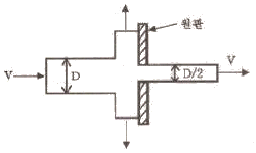
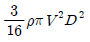
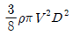
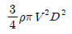
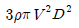
(정답률: 54%)
25. 저장용기로부터 20℃의 물을 길이 300m, 지름 900mm인 콘크리트 수평 원관을 통하여 공급하고 있다. 유량이 1m3/s일 때 원관에서의 압력강하는 약 몇 kPa인가? (단, 관마찰 계수는 약 0.023이다.)
- 3.57
- 9.47
- 14.3
- 18.8
(정답률: 50%)
26. 물탱크에 담긴 물의 수면의 높이가 10m인데, 물탱크 바닥에 원형 구멍이 생겨서 10L/s 만큼 물이 유출되고 있다. 원형 구멍의 지름은 약 몇 cm인가? (단, 구멍의 유량보정계수는 0.6이다.)
- 2.7
- 3.1
- 3.5
- 3.9
(정답률: 39%)
27. 20℃ 물 100L를 화재현장의 화염에 살수하였다. 물이 모두 끊는 온도(100℃)까지 가열되는 동안 흡수하는 열량은 약 몇 kJ인가? (단, 물의 비열은 4.2kJ/(kg·K)이다.)
- 500
- 2000
- 8000
- 33600
(정답률: 53%)
28. 아래 그림과 같은 반지름이 1m이고, 폭이 3m인 곡면의 수문 AB가 받는 수평분력은 약몇 N인가?
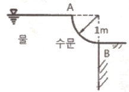
- 7350
- 14700
- 23900
- 29400
(정답률: 51%)
29. 초기온도와 압력이 각각 50℃, 600kPa인 이상기체를 100kPa까지 가역 단열팽창시켰을 때 온도는 약 몇 K인가? (단, 이 기체의 비열비는 1.4이다.)
- 194
- 216
- 248
- 262
(정답률: 33%)
30. 100cm ×100cm이고, 300℃로 가열된 평판에 25℃의 공기를 불어준다고 할 때 열전달량은 약 몇 kW인가? (단, 대류열전달 계수는 30W/(m2·K)이다.)(오류 신고가 접수된 문제입니다. 반드시 정답과 해설을 확인하시기 바랍니다.)
- 2.98
- 5.34
- 8.25
- 10.91
(정답률: 46%)
31. 호주에서 무게가 20N인 어떤 물체를 한국에서 재어보니 19.8N이었다면 한국에서의 중력가속도는 약 몇 m/s2인가? (단, 호주에서의 중력가속도는 9.82m/s2이다.)
- 9.72
- 9.75
- 9.78
- 9.82
(정답률: 60%)
32. 비압축성 유체를 설명한 것으로 가장 옳은 것은?
- 체적탄성계수가 0인 유체를 말한다.
- 관로 내에 흐르는 유체를 말한다.
- 점성을 갖고 있는 유체를 말한다.
- 난류 유동을 하는 유체를 말한다.
(정답률: 61%)
33. 지름 20cm의 소화용 호스에 물이 질량유량 80kg/s로 흐른다. 이때 평균유속은 약 몇 m/s인가?
- 0.58
- 2.55
- 5.97
- 25.48
(정답률: 50%)
34. 깊이 1m까지 물을 넣은 물탱크의 밑에 오리피스가 있다. 수면에 대기압이 작용할 때의 초기 오리피스에서의 유속 대비 2배 유속으로 물을 유출시키려면 수면에는 몇 kPa의 압력을 더 가하면 되는가? (단, 손실은 무시한다.)
- 9.8
- 19.6
- 29.4
- 39.2
(정답률: 29%)
35. 그림과 같은 거꾸로 된 마노미터에서 물과 기름, 수은이 채워져 있다. a=10cm, c=25cm이고 A의 압력이 B의 압력보다 80kPa작을 때 b의 길이는 약 몇 cm인가? (단, 수은의 비중량은 133100N/m3, 기름의 비중은 0.9이다.)
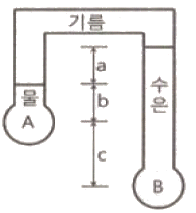
- 17.8
- 27.8
- 37.8
- 47.8
(정답률: 34%)
36. 공기를 체적비율이 산소(O2, 분자량 32g/mol) 20%, 질소(N2, 분자량 28g/mol) 80%의 혼합기체라 가정할 때 공기의 기체상수는 약 몇 kJ/(kg·K)인가? (단, 일반기체상수는 8.3145kJ/(kmol·K)이다.)
- 0.294
- 0.289
- 0.284
- 0.279
(정답률: 44%)
37. 물이 소방노즐을 통해 대기로 방출될 때 유속이 24m/s가 되도록 하기 위해서는 노즐입구의 압력은 몇 kPa가 되어야 하는가? (단, 압력은 계기 압력으로 표시되며 마찰손실 및 노즐입구에서의 속도는 무시한다.)
- 153
- 203
- 288
- 312
(정답률: 51%)
38. 무한한 두 평판 사이에 유체가 채워져 있고 한 평판은 정지해 있고 또 다른 평판은 일정한 속도로 움직이는 Couette 유동을 하고 있다. 유체 A만 채워져 있을 때 평판을 움직이기 위한 단위면적당 힘을 r1이라 하고 같은 평판 사이에 점성이 다른 유체 B만 채워져 있을 때 필요한 힘을 r2라 하면 유체 A와 B가 반반씩 위아래로 채워져 있을 때 평판을 같은 속도로 움직이기 위한 단위면적당 힘에 대한 표현으로 옳은 것은?
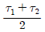
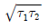
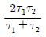
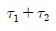
(정답률: 59%)
39. 동점성계수가 1.15×10-6m2/s인 물이 30mm의 지름 원관 속을 흐르고 있다. 층류가 기대될 수 있는 최대 유량은 약 몇 m3/s인가? (단, 임계 레이놀즈 수는 2100이다.)
- 2.85×10-5
- 5.69×10-5
- 2.85×10-7
- 5.69×10-7
(정답률: 53%)
40. 다음과 같은 유동형태를 갖는 파이프 입구 영역의 유동에서 부차적 손실계수가 가장 큰 것은?
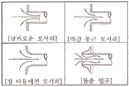
- 날카로운 모서리
- 약간 둥근 모서리
- 잘 다듬어진 모서리
- 돌출 입구
(정답률: 71%)
3과목: 소방관계법규
41. 화재예방, 소방시설 설치ㆍ유지 및 안전관리에 관한 법령상 비상경보설비를 설치하여야 할 특정소방대상물의 기준 중 옳은 것은?(단, 지하구, 모래ㆍ석재 등 불연재료 창고 및 위험물 저장ㆍ처리 시설 중 가스시설은 제외한다.)
- 지하층 또는 무창층의 바닥면적이 50m2 상인 것
- 연면적 400m2 이상인 것
- 지하가 중 터널로서 길이가 300m 이상인 것
- 30명 이상의 근로자가 작업하는 옥내 작업장
(정답률: 51%)
42. 소방기본법령상 위험물 또는 물건의 보관기간은 소방본부 또는 소방서의 게시판에 공고 하는 기간의 종료일 다음 날부터 며칠로 하는가?
- 3
- 4
- 5
- 7
(정답률: 71%)
43. 화재예방, 소방시설 설치ㆍ유지 및 안전관리에 관한 법령상 스프링클러설비를 설치하여야 하는 특정소방대상물의 기준 중 틀린 것은?(단, 위험물 저장 및 처리 시설 중 가스시설 또는 지하구는 제외한다.)
- 숙박이 가능한 수련시설 용도로 사용되는 시설의 바닥면적의 합계가 600m2 이상인 것은 모든 층
- 창고시설(물류터미널은 제외)로서 바닥면적 합계가 5000m2 이상인 경우에는 모든 층
- 판매시설, 운수시설 및 창고시설(물류터미널에 한정)로서 바닥면적의 합계가 5000m2 이상이거나 수용인원이 500명 이상인 경우에는 모든 층
- 복합건축물로서 연면적이 3000m2 이상인 경우에는 모든 층
(정답률: 51%)
44. 소방기본법상 소방본부장, 소방서장 또는 소방대장의 권한이 아닌 것은?
- 화재, 재난·재해, 그 밖의 위급한 상황이 발생한 현장에서 소방활동을 위하여 필요할 때에는 그 관할구역에 사는 사람 또는 그 현장에 있는 사람으로 하여금 사람을 구출하는 일 또는 불을 끄거나 불이 번지지 아니하도록 하는 일을 하게 할 수 있다.
- 소방활동을 할 때에 긴급한 경우에는 이웃한 소방본부장 또는 소방서장에게 소방업무의 응원을 요청할 수 있다.
- 사람을 구출하거나 불이 번지는 것을 막기 위하여 필요할 때에는 화재가 발생하거나 불이 번질 우려가 있는 소방대상물 및 토지를 일시적으로 사용하거나 그 사용의 제한 또는 소방활동에 필요한 처분을 할 수 있다.
- 소방활동을 위하여 긴급하게 출동할 때에는 소방자동차의 통행과 소방활동에 방해가 되는 주차 또는 정차된 차량 및 물건 등을 제거하거나 이동시킬 수 있다.
(정답률: 53%)
45. 위험물안전관리법상 지정수량 미만인 위험물의 저장 또는 취급에 관한 기술상의 기준은 무엇으로 정하는가?
- 대통령령
- 총리령
- 시ㆍ도의 조례
- 행정안전부령
(정답률: 48%)
46. 위험물안전관리법상 업무상 과실로 제조소등에서 위험물을 유출ㆍ방출 또는 확산시켜 사람의 생명ㆍ신체 또는 재산에 대하여 위험을 발생시킨 자에 대한 벌칙 기준으로 옳은 것은?
- 5년 이하의 금고 또는 2000만원 이하의 벌금
- 5년 이하의 금고 또는 7000만원 이하의 벌금
- 7년 이하의 금고 또는 2000만원 이하의 벌금
- 7년 이하의 금고 또는 7000만원 이하의 벌금
(정답률: 63%)
47. 소방기본법상 소방활동구역의 설정권자로 옳은 것은?
- 소방본부장
- 소방서장
- 소방대장
- 시·도지사
(정답률: 45%)
48. 소방기본법령상 소방용수시설별 설치기준 중 틀린 것은?
- 급수탑 개폐밸브는 지상에서 1.5m 이상 1.7m 이하의 위치에 설치하도록 할 것
- 소화전은 상수도와 연결하여 지하식 또는 지상식의 구조로 하고, 소방용호스와 연결하는 소화전의 연결금속구의 구경은 100mm로 할 것
- 저수조 흡수관의 투입구가 사각형의 경우에는 한 변의 길이가 60cm 이상, 원형의 경우에는 지름이 60cm 이상일 것
- 저수조는 지면으로부터의 낙차가 4.5m 이하일 것
(정답률: 49%)
49. 화재예방, 소방시설 설치ㆍ유지 및 안전관리에 관한 법상 특정소방대상물에 소방시설이 화재안전기준에 따라 설치 또는 유지ㆍ관리 되어 있지 아니할 때 해당 특정소방대상물의 관계인에게 필요한 조치를 명할 수 있는 자는?
- 소방본부장
- 소방청장
- 시·도지사
- 행정안전부장관
(정답률: 46%)
50. 화재예방, 소방시설 설치ㆍ유지 및 안전관리에 관한 법상 소방안전관리대상물의 소방안전 관리자 업무가 아닌 것은?(문제 오류로 실제 시험장에서는 모두 정답 처리 되었습니다. 여기서는 가답안인 3번을 누르면 정답 처리 됩니다.)
- 소방훈련 및 교육
- 자위소방대 및 초기대응체계의 구성·운영·교육
- 피난시설, 방화구획 및 방화시설의 유지·관리
- 피난계획에 관한 사항과 대통령령으로 정하는 사항이 포함된 소방계획서의 작성 및 시행
(정답률: 61%)
51. 화재예방, 소방시설 설치ㆍ유지 및 안전관리에 관한 법령상 소방안전관리대상물의 소방계획서에 포함되어야 하는 사항이 아닌 것은?
- 예방규정을 정하는 제조소등의 위험물 저장·취급에 관한 사항
- 소방시설·피난시설 및 방화시설의 점검·정비계획
- 특정소방대상물의 근무자 및 거주자의 자위소방대 조직과 대원의 임무에 관한 사항
- 방화구획, 제연구획, 건축물의 내부 마감 재료(불연재료·준불연재료 또는 난연재료로 사용된 것) 및 방염물품의 사용현황과 그 밖의 방화구조 및 설비의 유지·관리계획
(정답률: 39%)
52. 화재예방, 소방시설 설치ㆍ유지 및 안전관리에 관한 법상 소방시설등에 대한 자체점검을 하지 아니하거나 관리업자 등으로 하여금 정기적으로 점검하게 하지 아니한 자에 대한 벌칙 기준으로 옳은 것은?
- 6개월 이하의 징역 또는 1000만원 이하의 벌금
- 1년 이하의 징역 또는 1000만원 이하의 벌금
- 3년 이하의 징역 또는 1500만원 이하의 벌금
- 3년 이하의 징역 또는 3000만원 이하의 벌금
(정답률: 57%)
53. 화재예방, 소방시설 설치ㆍ유지 및 안전관리에 관한 법령상 소방용품이 아닌 것은?
- 소화약제 외의 것을 이용한 간이소화용구
- 자동소화장치
- 가스누설경보기
- 소화용으로 사용하는 방염제
(정답률: 48%)
54. 소방기본법령상 소방본부 종합상황실 실장이 소방청의 종합상황실에 서면ㆍ모사전송 또는 컴퓨터통신 등으로 보고하여야 하는 화재의 기중 중 틀린 것은?
- 항구에 매어둔 총 톤수가 1000톤 이상인 선박에서 발생한 화재
- 층수가 5층 이상이거나 병상이 30개 이상인 종합병원·정신병원·한방병원·요양소에서 발생한 화재
- 지정수량의 1000배 이상의 위험물의 제조소·저장소·취급소에서 발생한 화재
- 연면적 15000m2 이상인 공장 또는 화재경계지구에서 발생한 화재
(정답률: 47%)
55. 위험물안전관리법령상 위험물의 안전관리와 관련된 업무를 수행하는 자로서 소방청장이 실시하는 안전교육대상자가 아닌 것은?
- 안전관리자로 선임된 자
- 탱크시험자의 기술인력으로 종사하는 자
- 위험물운송자로 종사하는 자
- 제조소등의 관계인
(정답률: 51%)
56. 소방공사업법령상 공사감리자 지정대상 특정 소방대상물의 범위가 아닌 것은?
- 캐비닛형 간이스프링클러설비를 신설·개설하거나 방호·방수 구역을 증설할 때
- 물분무등소화설비(호스릴 방식의 소화설비는 제외)를 신설·개설하거나 방호·방수구역을 증설할 때
- 제연설비를 신설·개설하거나 제연구역을 증설할 때
- 연소방지설비를 신설·개설하거나 살수구역을 증설할 때
(정답률: 57%)
57. 위험물안전관리법상 위험물시설의 설치 및 변경 등에 관한 기준 중 다음 ( ) 안에 알맞은 것은?
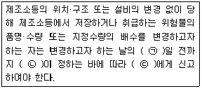
- ㉠ 1, ㉡ 행정안전부령, ㉢ 시·도지사
- ㉠ 1, ㉡ 대통령령, ㉢ 소방본부장·소방서장
- ㉠ 14, ㉡ 행정안전부령, ㉢ 시·도지사
- ㉠ 14, ㉡ 대통령령, ㉢ 소방본부장·소방서장
(정답률: 50%)
58. 화재예방, 소방시설 설치ㆍ유지 및 안전관리에 관한 법상 특정소방대상물의 피난시설, 방화 구획 또는 방화시설의 폐쇄ㆍ훼손ㆍ변경 등의 행위를 한 자에 대한 과태료 기준으로 옳은 것은?
- 200만원의 이하의 과태료
- 300만원의 이하의 과태료
- 500만원의 이하의 과태료
- 600만원의 이하의 과태료
(정답률: 56%)
59. 소방기본법령상 특수가연물의 저장 및 취급 기준 중 다음 ( ) 안에 알맞은 것은?(단, 석탄ㆍ목탄류를 발전용으로 저장하는 경우는 제외한다.)
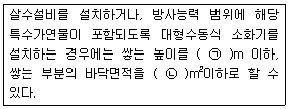
- ㉠10, ㉡30
- ㉠10, ㉡50
- ㉠15, ㉡100
- ㉠15, ㉡200
(정답률: 52%)
60. 소방시설공사업법령상 상주 공사감리 대상 기준 중 다음 ( ) 안에 알맞은 것은?
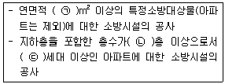
- ㉠ 10000, ㉡ 11, ㉢ 600
- ㉠ 10000, ㉡ 16 ㉢ 500
- ㉠ 30000, ㉡ 11, ㉢ 600
- ㉠ 30000, ㉡ 16, ㉢ 500
(정답률: 53%)
4과목: 소방기계시설의 구조 및 원리
61. 전역방출방식의 분말소화설비에 있어서 방호구역의 용적이 500m3일 때 적합한 분사헤드의 수는? (단, 제1종 분말이며, 체적 1m3당 소화약제의 양은 0.60kg이며, 분사헤드 1개의 분당 표준 방사량은 18kg이다.)
- 17개
- 30개
- 34개
- 134개
(정답률: 50%)
62. 이산화탄소 소화약제의 저장용기 설치기준 중 옳은 것은?
- 저장용기의 충전비는 고압식은 1.9 이상 2.3 이하, 저압식은 1.5 이상 1.9 이하로 할 것
- 저압식 저장용기에는 액면계 및 압력계와 2.1MPa 이상 1.9MPa 이하의 압력에서 작동하는 압력경보장치를 설치할 것
- 저장용기 고압식은 25MPa 이상, 저압식은 3.5MPa 이상의 내압시험압력에 합격한 것으로 할 것
- 저압식 저장용기에는 내압시험압력의 1.8배의 압력에서 작동하는 안전밸브와 내압시험압력의 0.8배로부터 내압시험압력에서 작동하는 봉판을 설치할 것
(정답률: 56%)
63. 화재 시 연기가 찰 우려가 없는 장소로서 호스릴분말소화설비를 설치할 수 있는 기준중 다음 ( ) 안에 알맞은 것은?
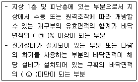
- ㉠ 15, ㉡ 1/5
- ㉠ 15, ㉡ 1/2
- ㉠ 20, ㉡ 1/5
- ㉠ 20, ㉡ 1/2
(정답률: 50%)
64. 소화수조의 소요수량이 20m3 이상 40m3 미만인 경우 설치하여야 하는 채수구의 개수로 옳은 것은?
- 1개
- 2개
- 3개
- 4개
(정답률: 59%)
65. 건축물에 설치하는 연결살수설비 헤드의 설치기준 중 다음 ( ) 안에 알맞은 것은?
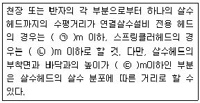
- ㉠ 3.7, ㉡ 2.3, ㉢ 2.1
- ㉠ 3.7, ㉡ 2.1, ㉢ 2.3
- ㉠ 2.3, ㉡ 3.7, ㉢ 2.3
- ㉠ 2.3, ㉡ 3.7, ㉢ 2.1
(정답률: 60%)
66. 포소화설비의 자동식 기동장치를 폐쇄형 스프링클러헤드의 개방과 연동하여 가압송수장치ㆍ일제 개방밸브 및 포 소화약제 혼합장치를 기동하는 경우의 설치 기준 중 다음 ( )안에 알맞은 것은?(단, 자동화재탐지설비의 수신기가 설치된 장소에 상시 사람이 근무하고 있고, 화재 시 즉시 해당 조작부를 작동시킬 수 있는 경우는 제외한다.)
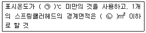
- ㉠ 79, ㉡ 8
- ㉠ 121, ㉡ 8
- ㉠ 79, ㉡ 20
- ㉠ 121, ㉡ 20
(정답률: 64%)
67. 스프링클러설비 가압송수장치의 설치기준 중 고가수조를 이용한 가압송수장치에 설치하지 않아도 되는 것은?
- 수위계
- 배수관
- 오버플로우관
- 압력계
(정답률: 67%)
68. 특별피난계단의 계단실 및 부속실 제연설비의 차압 등에 관한 기준 중 다음 ( ) 안에 알맞은 것은?
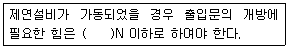
- 12.5
- 40
- 70
- 110
(정답률: 65%)
69. 완강기의 최대사용자수 기준 중 다음 ( ) 안에 알맞은 것은?
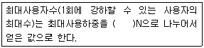
- 250
- 500
- 750
- 1500
(정답률: 69%)
70. 화재조기진압용 스프링클러설비 가지배관의 배열기준 중 천장의 높이가 9.1m 이상 13.7m 이하인 경우 가지배관 사이의 거리 기준으로 옳은 것은?
- 2.4m 이상 3.1m 이하
- 2.4m 이상 3.7m 이하
- 6.0m 이상 8.5m 이하
- 6.0m 이상 9.3m 이하
(정답률: 34%)
71. 스프링클러설비 헤드의 설치기준 중 다음 ( ) 안에 알맞은 것은?
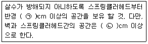
- ㉠ 10, ㉡ 60
- ㉠ 30, ㉡ 10
- ㉠ 60, ㉡ 10
- ㉠ 90, ㉡ 60
(정답률: 56%)
72. 포 소화약제의 혼합장치에 대한 설명 중 옳은 것은?
- 라인 푸로포셔너방식 이란 펌프의 토출관과 흡입관 사이의 배관 도중에 설치한 흡입기에 펌프에서 토출된 물의 일부를 보내고, 농도 조절밸브에서 조정된 포 소화약제의 필요량을 포 소화약제 탱크에서 펌프 흡입측으로 보내어 이를 혼합하는 방식을 말한다.
- 프레져사이드 푸로포셔너방식 이란 펌프의 토출관에 압입기를 설치하여 포 소화약제 압입용펌프로 포 소화약제를 압입시켜 혼합하는 방식을 말한다.
- 프레져 푸로포셔너방식 이란 펌프와 발포기 중간에 설치된 벤추리관의 벤추리작용에 따라 포 소화약제를 흡입·혼합하는 방식을 말한다.
- 펌프 푸로포셔너방식 이란 펌프와 발포기의 중간에 설치된 벤추리관의 벤추리작용과 펌프 가압수의 포 소화약제 저장탱크에 대한 압력에 따라 포 소화약제를 흡입·혼합하는 방식을 말한다.
(정답률: 67%)
73. 전동기 또는 내연기관에 따른 펌프를 이용하는 옥외소화전설비의 가압송수장치의 설치 기준 중 다음 ( ) 안에 알맞은 것은?
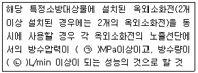
- ㉠ 0.17, ㉡ 350
- ㉠ 0.25, ㉡ 350
- ㉠ 0.17, ㉡ 130
- ㉠ 0.25, ㉡ 130
(정답률: 63%)
74. 미분무소화설비 용어의 정의 중 다음 ( ) 안에 알맞은 것은?
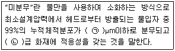
- ㉠ 400, ㉡ A,B,C
- ㉠ 400, ㉡ B,C
- ㉠ 200, ㉡ A,B,C
- ㉠ 200, ㉡ B,C
(정답률: 61%)
75. 소화기구의 소화약제별 적응성 중 C급 화재에 적응성이 없는 소화약제는?
- 마른 모래
- 청정소화약제
- 이산화탄소 소화약제
- 중탄산염류 소화약제
(정답률: 64%)
76. 소화약제 외의 것을 이용한 간이소화용구의 능력단위 기준 중 다음 ( ) 안에 알맞은 것은?
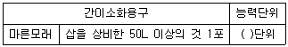
- 0.5
- 1
- 3
- 5
(정답률: 69%)
77. 다음과 같은 소방대상물의 부분에 완강기를 설치할 경우 부착 금속구의 부착위치로서 가장 적합한 위치는?
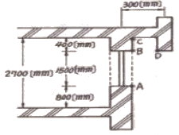
- A
- B
- C
- D
(정답률: 67%)
78. 연소방지설비의 배관의 설치기준 중 다음 ( ) 안에 알맞은 것은?(관련 규정 개정전 문제로 여기서는 기존 정답인 2번을 누르면 정답 처리됩니다. 자세한 내용은 해설을 참고하세요.)
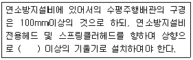
- 2/100
- 1/1000
- 1/100
- 1/500
(정답률: 57%)
79. 상수도소화용수설비의 소화전은 특정소방대상물의 수평투영면의 각 부분으로부터 몇 m이하가 되도록 설치하여야 하는가?
- 200
- 140
- 100
- 70
(정답률: 73%)
80. 이산화탄소 소화약제 저압식 저장용기의 충전비로 옳은 것은?
- 0.9이상 1.1이하
- 1.1이상 1.4이하
- 1.4이상 1.7이하
- 1.5이상 1.9이하
(정답률: 60%)